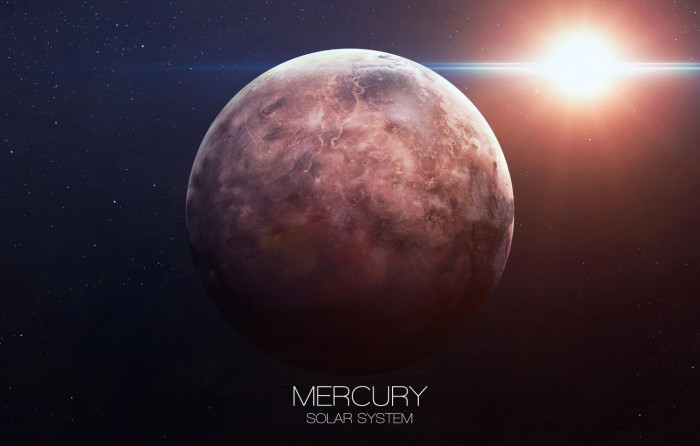
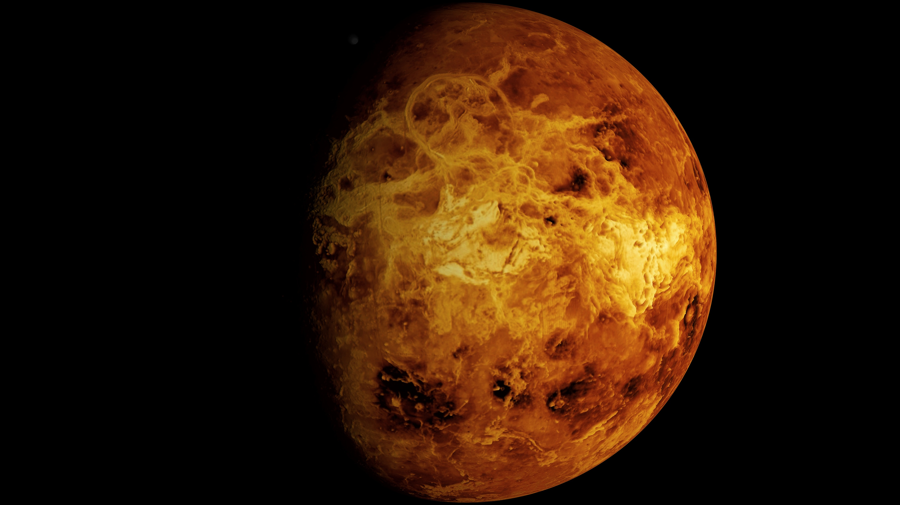

عطارد
اول كوكب في الترتيب
عطارد: كوكب صغير وقريب من الشمس،
سطحه مليء بالحفر والمفاجآت
. يمكن رؤية الشمس بحجم ثلاثة أضعاف على سطحه والضوء أكثر من 11 مرة.
ليس الأكثر حرارة
، ولكنه الأسرع،
يدور حول الشمس كل 88 يومًا فقط، واختير اسمه نسبة إلى إله روماني سريع.
فهو كوكب يحمل أسرارًا تنتظر الكشف.
المريخ
ثالث كوكب
المريخ، الكوكب الأحمر، عالم قاسٍ ذو غلاف جوي رقيق ودرجات حرارة شديدة.
إنه الكوكب الأكثر جفافًا في النظام الشمس
ي، ولكنه أيضًا الأكثر شبهاً بالأرض،
مما يجعله هدفًا رئيسيًا للاستكشاف البشري. يعتقد العلماء أن المريخ كان صالحًا للحياة في يوم من الأيام،
وهم يبحثون اليوم عن علامات الحياة.